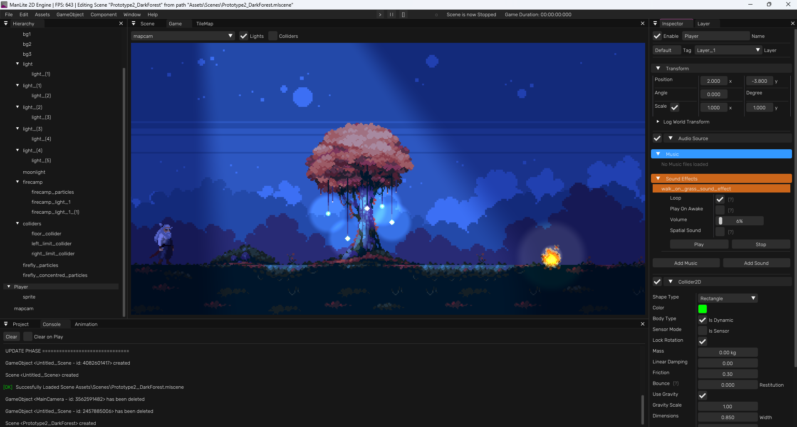
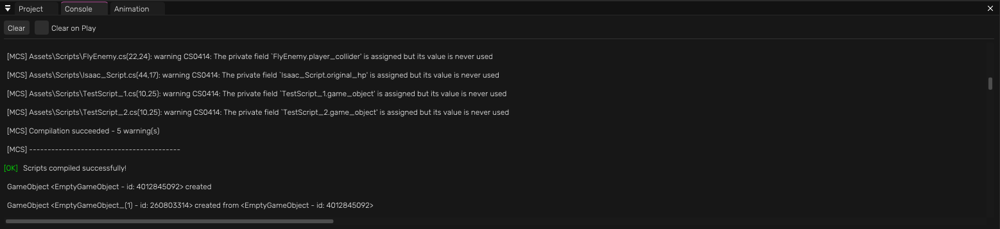
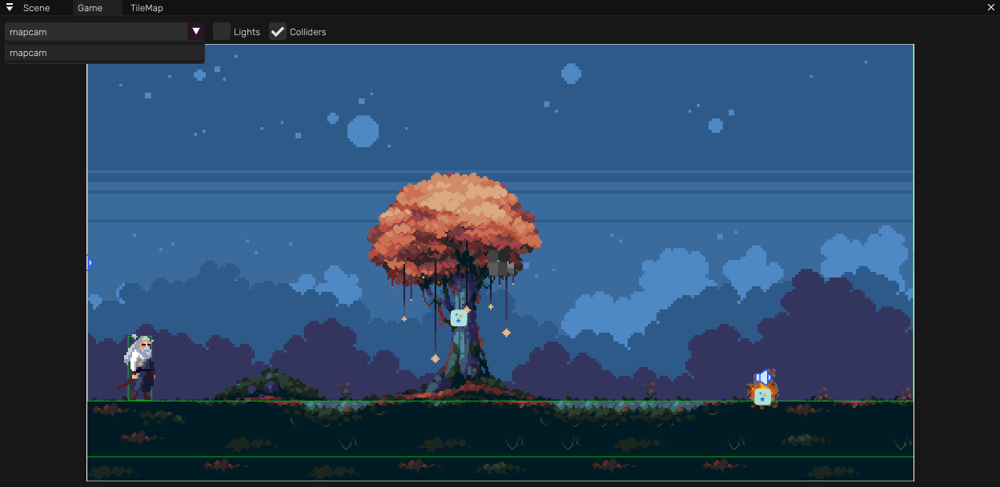

This documentation will be useful for the user in order to know how the engine works and how to take profit of all the features it has.
Things To Know
This engine has been being improved again and again, it has rendering draw calls optimizations
that increase the basic shapes rendering performance a 300% and the sprites rendering
performance a 25-30%
Remember you can edit Scripts without having to close the engine.
When you have the engine in background, maybe because you are editing a Script or maybe a Tiled
file, the engine will automatically set to idling (a functionality that caps the program
framerate to 11) and will stop heavy functions.
This engine will render the game objects based on their order in layer, NOT their order in the
hierarchy.
Prefabs will be set automatically to the upper layer when instantiated in scripts.
Shortcuts
- Ctrl + Shift + N -> Create empty Game Object
- Ctrl + N -> Create New Empty Scene
- Ctrl + O -> Open Scene
- Ctrl + S -> Save Scene
- Ctrl + D -> Duplicate GameObject(s)
- Backspace / Delete -> Delete Selected GameObject(s)
Hierarchy
The hierarchy is really easy to use, you can just right click anywhere and choose your desired option. You can also drag and drop any game object or a set of game objects into others in order to reparent them, re-order them, etc. You can right click the scene to rename it and even search any game object by name.
Project
The Project manages and shows to the user the files that are inside the project, allowing the user to reparent any file by drag and drop, to rename files, delete them, open them, or even drag and drop them to any available part of the engine to use it.
Console
The Console is an indispensable tool in order too see what is happening in the program. The user can also take profit of it by placing Logs inside scritps.
Animator
The animator is the tool that the user can use in order to create an animation out of a spritesheet. User can duplicate frames, delete them, modify them, modify the speed, flip them, etc.
Scene
The scene is the main use view where the user can see what things are in the scene visually. It
uses a virtual camera instead of using any scene Game Object Camera.
User can move in the scene by:
- Right Click + WASD (hold shift for faster movement or ctrl for slower movement)
- Middle Mouse Button Click + Mouse Motion
- Middle Mouse Button Scroll to Zoom in or Zoom out
In the Scene, user can choose if hide lights, colliders (and gizmos) and grid, it has some
ImGuizmo options in order to transform the GameObjects and it allows to change the background
color.
Game
The Game is the final view of the game, it is what is going to be seen in a build. Here the user can also choose what's going to be the main camera.
TileMap
The TileMap panel allows the user to edit a TileMap using 3 types of drawing (they are shown in
thevideo below)
- Selection: select tiles from the final grid and paint them with a tile from the TileSet
- Brush: select tiles from the TileSet and paint them into the final grid
- Bucket: select a tile from the TileSet and paint continuously the same tiles in the final grid
It also allows you to modify the tile size in texture, the grid dimensions and the world tile
size and see some more information about the TileMap
IMPORTANT: Tiled importation into the engine:
In order to import a Tiled file it must be a .json file directly exported from Tiled (tiled ->
export as -> .json)
And it must follow the following rules:
- Orientation must be Orhogonal
- Type must be Map
- The amount of tilesets used by the TileMap must be 1, and it must be an EMBED tileset (not an
external .tsx file)
- It can NOT be an infinite TileMap, it must have a grid width and height.
- Tiled file can contain Object Layers with rectangular objects, they will be imported as Static
colliders into the scene.
- Those Object Layers can have a Custom Attribute called "sensor" being a bool, in order to tell
the engine on import, if the objects of that layer will be a sensor or a physical object.
Here a small video on how to import a tiled file
Layer
The Layer is a panel where the user can manage, reorder, rename and toggle visibility of the
layers and their game objects.
Since the Render order is managed by these layers, the user must take them into account
precisely on
developing the scene.
This engine will render the game objects based on their order in layer, NOT their order in the
hierarchy.
Do you need more information? Remember there is a set of video tutorials showing how to use the engine, too!
If you still have any question you are free to contact me!